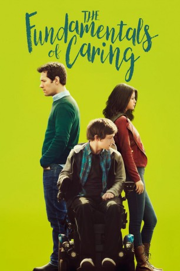

#9672 Umweg nach Hause
Alternativ: The Fundamentals of Caring
 
 IMDB-Wertung: 7.3 / 10
IMDB-Wertung: 7.3 / 10  Metascore: 0
Metascore: 0 
Der ehemalige Schriftsteller Ben muss den Tod seines Kindes verarbeiten, macht eine nervenaufreibende Scheidung durch und beschließt aus Geldsorgen, sich per Crashkurs zu einer Pflegekraft ausbilden zu lassen. Kurz darauf wird ihm mit dem erst 18 Jahre alten Trevor der erste Patient zugeteilt. Trevor leidet an Muskeldystrophie, sitzt deshalb im Rollstuhl und verbringt seinen Alltag mit starrer Routine – macht seine Immobilität aber mit einem großen Mundwerk wett. Schnell werden der junge Mann und sein neuer Betreuer ein ungleiches Team – und nachdem Trevors Mutter Elsa widerwillig zustimmte, brechen Trevor und Ben zu einem abenteuerlichen Trip auf: zu den langweiligsten Attraktionen der USA, darunter das größte (ausgestopfte) Rind der Welt. Unterwegs gabeln sie die vorlaute Ausreißerin Dot und die werdende Mutter Peaches auf.
Jahr: 2016
Dauer: 97 Minuten
FSK: 12
Land: USA Studio: NetflixTonspuren: - , - , - , - , - ,
Untertitel: Deutsch, Englisch,
Auflösung: 1080p (1920x1080) Größe: 3082 MB
Genre: Drama, Komödie
Regisseur: Rob Burnett
Drehbuch: Rob Burnett, Jonathan Evison
Soundtrack: Ryan Miller
Darsteller:
- Alex Huff als Jodi
 Donna Biscoe als Caregiving Instructor
Donna Biscoe als Caregiving Instructor Paul Rudd als Ben Benjamin
Paul Rudd als Ben Benjamin Jennifer Ehle als Elsa
Jennifer Ehle als Elsa Craig Roberts als Trevor
Craig Roberts als Trevor- Ashley White als Cute Travel Channel Girl
- Alan Boell als Courier
 Selena Gomez als Dot
Selena Gomez als Dot Robert Walker Branchaud als Burly Helper
Robert Walker Branchaud als Burly Helper- James Donadio als Waiter
 Megan Ferguson als Peaches
Megan Ferguson als Peaches Frederick Weller als Bob
Frederick Weller als Bob Matt Mercurio als EMT
Matt Mercurio als EMT Bobby Cannavale als Cash (uncredited)
Bobby Cannavale als Cash (uncredited)- Lori Hammel als Voice (uncredited)
- Polly Mitchell Giles als Lady in Park (uncredited)
- Kristi Von als Diner Waitress (uncredited)
- Julia Denton als Janet
- Matthew Pruitt als TV Reporter
- Bill Murphey als Mike
- Eric Singer als Burly Helper #2
- Samantha Huskey als Kaitlin
- Cassie als Tourist (uncredited)
- Tarik Chernet als Holly - EMT (uncredited)
 Walter Hendrix III als Quarry Patron (uncredited)
Walter Hendrix III als Quarry Patron (uncredited) Patti Schellhaas als Car Dealership Customer (uncredited)
Patti Schellhaas als Car Dealership Customer (uncredited)- Blake Sewell als Diner Patron (uncredited)
Datei: X:\2016(N-Z)\Umweg nach Hause (2016, FSK12, 1920x1080).mkv seit 02.10.2018
Festplatte: HD 2016(A-Z)
 Es gibt insgesamt 182 Filme in der Gruppe '2016(N-Z)'
Es gibt insgesamt 182 Filme in der Gruppe '2016(N-Z)'